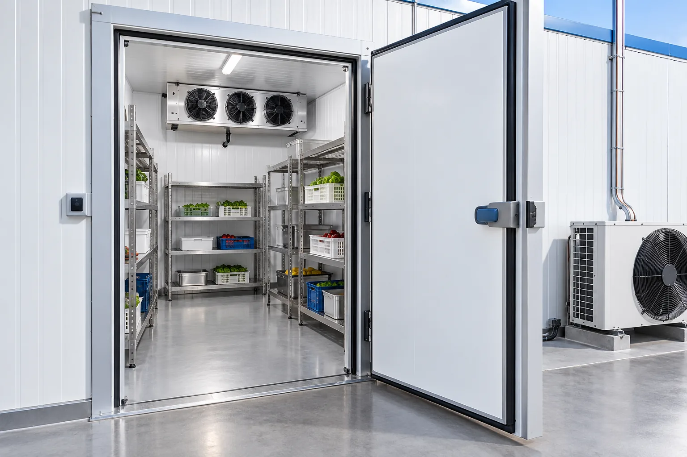

Расчёт холода
Учитываем объём, продукт, открывание дверей и нужную температуру.
Проектируем, монтируем и обслуживаем холодильные и морозильные камеры под ваш объём, продукт и режим работы. От расчёта до стабильной работы системы.

Камера хранения: изолированный объём, испаритель и стеллажи. Иллюстрация услуги.
Считаем холодопроизводительность по продукту и режиму эксплуатации, подбираем оборудование под бюджет, монтируем систему и настраиваем автоматику.
Учитываем объём, продукт, открывание дверей и нужную температуру.
Подбираем компрессоры, агрегаты и автоматику под проект и бюджет.
Испарители, трассы, опрессовка, заправка и запуск с выходом на режим.
Щиты управления, силовые линии, заземление и безопасное подключение.
Carel, Eliwell и аналоги: оттайка, аварийные сценарии, контроль режима.
Плановое ТО и срочный выезд, чтобы простой не остановил бизнес.
Обсудим плановое обслуживание, проверку герметичности, автоматики и оттайки. График ТО и порядок аварийного обращения согласуем в договоре.
Для новой камеры уточним загрузку, изоляцию и условия эксплуатации. Для ремонта — текущую температуру, симптомы и модель оборудования.
Модель и состояние оборудования, результаты диагностики, необходимые детали и объём работ. Состав и стоимость согласуем до ремонта или монтажа.
Размеры помещения, продукт, температура хранения и город монтажа. Личные документы и другие лишние сведения присылать не нужно.
Свяжитесь с мастером. Срок зависит от диагностики, объёма работ и доступности деталей. Время приёма или выезда подтвердим отдельно.
Форма ниже подготовит текст для WhatsApp. Отправьте его в самом приложении. Если не хотите пользоваться мессенджером, позвоните по указанному номеру.
Давайте разберёмся
Размеры помещения, продукт, температура хранения и город монтажа.
+7 902 555 12 00Владивосток и Приморье.
Приём техники и выезд — по согласованию.